7210E18 R.R. FRONT WING
- Path
- Procedures > 72 PANELS AND FRAME > 7210 REMOVING REFITTING > 7210E EXTERNAL PARTS > 7210E18 R.R. FRONT WING
- Kind
- repair procedure (removal / refitting; the operation number is the code)
- Applies to
- all engines; all production periods
- Interactive page
- https://sloeber94.github.io/elrnDB-fMltpl/en/#/2892319
Applies to: all engines; production: fino a 05/99, da 09/03, da 06/99 a 03/02, da 04/02 a 08/03, fino a 05/04
 Removing
Removing
 Refitting
RefittingCheck if any of the connected parts are deformed by checking body alignment dimensions. Use appropriate measurement tools (reference rigs, templates or gauges).
Straighten the body if necessary.
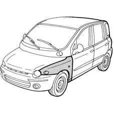
Applies to: all engines; production: fino a 05/99, da 09/03, da 06/99 a 03/02, da 04/02 a 08/03, fino a 05/04
1. Lift the bonnet lid.
2. Open the front door.
3. Remove the PVC treatment between front pillar and wing using a vibrating cutter and appropriate blade.
4. Heat and then use an appropriate blade to cut the sealant between front pillar and wing.
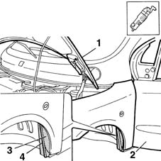
Applies to: all engines; production: fino a 05/99, da 09/03, da 06/99 a 03/02, da 04/02 a 08/03, fino a 05/04
1. Unscrew the upper wing retaining bolts.
2. Unscrew the wing side retaining bolt.
3. Remove the wing from the car.
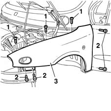
Applies to: all engines; production: fino a 05/99, da 09/03, da 06/99 a 03/02, da 04/02 a 08/03, fino a 05/04
Refitting
Removing1. Clean off residues of old sealant, foam and PVC using a vibrating cutter and appropriate blade.
2. Position the wing (2a) on the car and secure provisionally using the retaining bolts (2b).
3. Lower the bonnet (3a) and close the front door (3b). Check the door is aligned and that the gap around the edge is even.
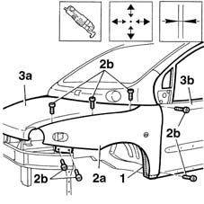
Applies to: all engines; production: fino a 05/99, da 09/03, da 06/99 a 03/02, da 04/02 a 08/03, fino a 05/04
1. Check the wing in accordance with the specified procedure.
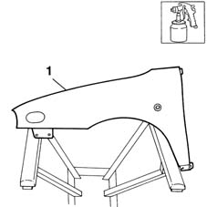
Applies to: all engines; production: fino a 05/99, da 09/03, da 06/99 a 03/02, da 04/02 a 08/03, fino a 05/04
1. Position the wing on the car and screw in the retaining bolts without tightening.
2. Align the wing, checking the edges between wing and door (2a) and bonnet (2b).
3. Permitted wing adjustment movements are indicated by arrows.
4. Fully tighten the wing retaining bolts.
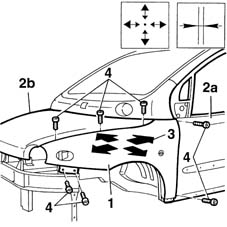
Applies to: all engines; production: fino a 05/99, da 09/03, da 06/99 a 03/02, da 04/02 a 08/03, fino a 05/04
1. Apply sealant to the area indicated (use the specified cycle).
2. Reapply PVC treatment to the areas indicated (use the specified cycle).
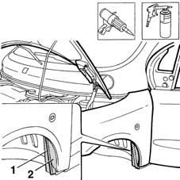
Applies to: all engines; production: fino a 05/99, da 09/03, da 06/99 a 03/02, da 04/02 a 08/03, fino a 05/04
Refit fouling parts.
Applies to: all engines; production: da 06/04
Removing
Refitting- Check that the components connected are not distorted by checking the bodyshell alignment measurements using suitable equipment (gauges, templates or jigs).
- Carry out any necessary bodyshell straightening operations.
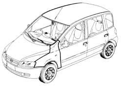
Applies to: all engines; production: da 06/04
- Lift up the bonnet lid.
- Open the front door.
- Remove the sound insulation.
- Remove the P.V.C. treatment between the front pillar and the wing using a vibrating knife and special blade.
- After heating, cut the sealant using the special blade between the front pillar and the wing.
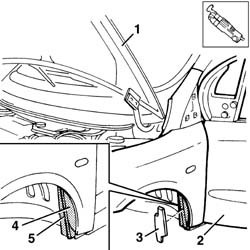
Applies to: all engines; production: da 06/04
- Apply bodywork adhesive tape to protect the edges of the front door and the front pillar.
- Undo the bolts fixing the front wing to the bodyshell.
- Remove the front wing from the vehicle.
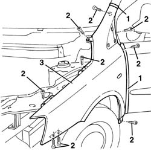
Applies to: all engines; production: da 06/04
Refitting
Removing- Clean the residues of old sealant, thermo-expandable material and P.V.C. using the vibrating knife and special blade.
- Position the wing (2a) on the vehicle and secure it temporarily using the fixing bolts (2b).
- Lower the bonnet lid; close the door and check/adjust the alignment and eveness of the surrounding gap.
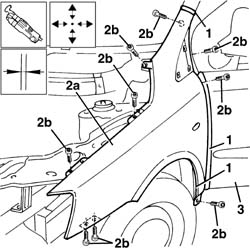
Applies to: all engines; production: da 06/04
- Remove the wing from the vehicle.
- Paint the wing following the recommended cycle.
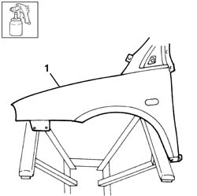
Applies to: all engines; production: da 06/04
- Position the wing on the vehicle and screw in the fixing bolts without tightening them.
- Align the wing checking the surrounding lines with the door and the bonnet.
- The arrows indicate the possible movements for adjusting the wing.
- Fully tighten the wing fixing bolts.
- Remove the adhesive tape.
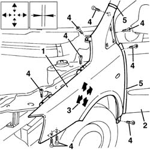
Applies to: all engines; production: da 06/04
- Apply sealant in the area illustrated (following the recommended cycle).
- Renew the P.V.C. treatment in the areas shown (following the recommended cycle).
- Place the sound insulation in position.
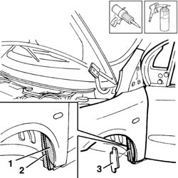
Applies to: all engines; production: da 06/04
- Reposition the components involved in the operation.